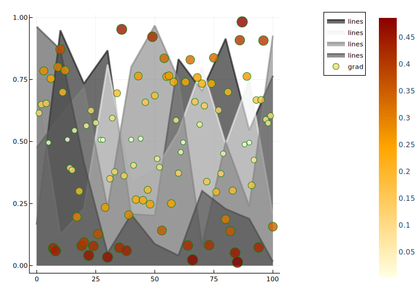

Colors


using Plots
plotlyjs()
Access predefined palettes (or build your own with the colorscheme method). Line/marker colors are auto-generated from the plot's palette, unless overridden. Set the z argument to turn on series gradients.
y = rand(100)
plot(0:10:100, rand(11, 4), lab = "lines", w = 3, palette = cgrad(:grays), fill = 0, α = 0.6)
scatter!(y, zcolor = abs.(y .- 0.5), m = (:heat, 0.8, Plots.stroke(1, :green)), ms = 10 * abs.(y .- 0.5) .+ 4, lab = "grad")
This page was generated using DemoCards.jl and Literate.jl.